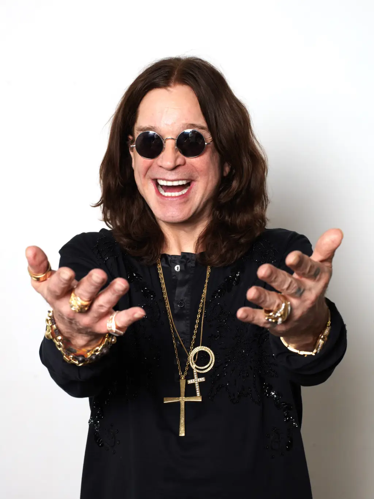

Notas Confidenciais
Bem-vindo ao "Notas Confidenciais", o seu destino online para todas as últimas fofocas e notícias quentes da indústria musical! Aqui você encontrará as informações mais atualizadas sobre os artistas mais populares do momento, os últimos lançamentos de álbuns e singles, e os bastidores das maiores premiações. Nossa equipe de jornalistas especializados está sempre de olho nas últimas tendências e acontecimentos, trazendo a você uma cobertura completa e imparcial do mundo da música. Prepare-se para se manter atualizado e envolvido com o que está acontecendo nos bastidores da cena musical!
Fofocas da Semana:
Anitta faz festa de aniversário em Miami:
Anitta fez mais uma festa numa balada em Miami na noite de ontem. A comemoração teve a presença de nomes como Neymar, MC Rebecca, MC Daniel e mais. Para a nova festa, Anitta escolheu um look mais despojado. Enquanto na primeira comemoração ela apostou na transparência, ontem ela estava com um top de biquíni preto e um micro short jeans, também preto. Ela completou o look com uma meia arrastão e acessórios de miçangas pretas. Ela diz que as comemorações ainda não acabaram. O aniversário dela é só dia 30, e Anitta afirma: "Até sábado a gente vai comemorar muito mais ainda. Porque a vida é para ser celebrada, vivida, aproveitada".
Ozzy Osbourne se manifesta contra Kayne West após uso de música sem autorização: "Ele é um antissemita":
Vocalista do Black Sabbath, Ozzy Osbourne acusou Kanye de usar trecho de War Pig sem autorização e de ser antissemita, “Kanye West pediu permissão para samplear uma seção de uma performance ao vivo de 1983 de War Pig do US Festival sem vocais e teve permissão negada porque ele é um antissemita e causou incontáveis dores a muitos. Mesmo assim, ele prosseguiu e usou o sample em sua festa de audição de álbum ontem à noite. Eu não quero nenhuma associação com esse homem!”, escreveu Ozzy no X, antigo Twitter. Ozzy se referiu a um evento de lançamento do novo novo álbum, Vulture, feita por Kanye West na última sexta-feira. A transmissão ao vivo foi cortada após uma declaração antissemita do rapper.
